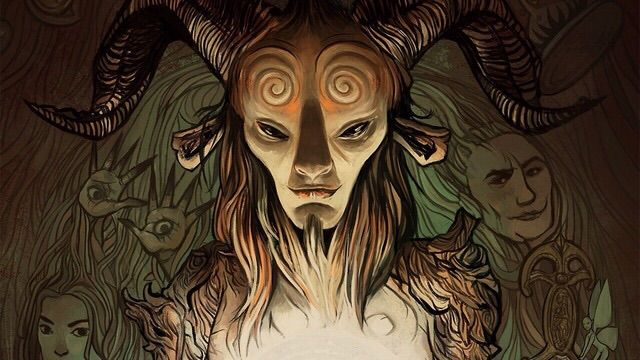

Sátiro
Los sátiros son criaturas que en la mitología griega acompañaban a Pan y Dioniso, vagando por bosques y montañas. En la mitología están a menudo relacionados con un desaforado apetito sexual. Se les representa de varias formas; la más común (y básicamente romana) es la de una criatura mitad hombre mitad carnero, con orejas puntiagudas y cuernos en la cabeza, abundante cabellera, una nariz chata, cola de cabra y un priapismo permanente
Antes
Después